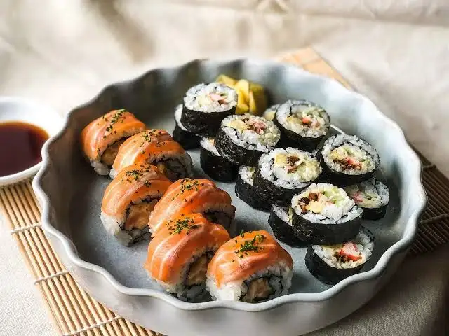

Sushi is traditionally made with
medium grain
white rice, although it can also be prepared with
brown rice or short grain rice.
Sushi is sometimes confused with sashimi,
a dish that consists of thinly sliced raw fish or
occasionally meat, without sushi
rice.
Today, sushi is considered
one of the most popular dishes in the world.
But im gonna show you the simple recipe of sushi but
rice.
Serve the sushi rice with your favorite sushi ingredients and enjoy!